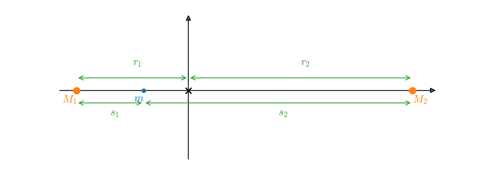

Equipotentials
Contents
import numpy as np
import matplotlib.pyplot as plt
Equipotentials#
We want to plot the effective potential along the line connecting the stars.
The general potential is
This is written such that the center of mass is at the origin of coordinates. With the stars on the \(x\)-axis, the configuration looks like:

We imagine putting a test mass, \(m\), on the \(x\)-axis and asking what is the potential that it feels. Then \(s_1\) and \(s_2\) are the distances from star 1 and star 2 to the test mass, respectively, and \(r\) is the distance from the center of mass (origin) to the test mass.
a#
The center of mass condition is \(M_1 |r_1| = M_2 |r_2|\), where \(r_1\) and \(r_2\) are the distances from the star to the center of mass (the radius of their respective orbits). We also know that \(a = |r_1| + |r_2|\).
In our coordinate system, \(r_1 < 0\), so we can write this as:
Solving this system, we get:
Now we can write down the distances, \(s_1\) and \(s_2\):
and the distance from the center of mass to our test mass, \(r\):
Note that it is the distance that matters in the potential, hence we need to take absolute values.
b#
Kepler’s third law is:
Recognizing that the angular velocity, \(\omega\), is \(\omega = 2\pi/P\), we have
Then we have
c#
Now we want to plot our potential.
This defines the potential divided by \(G(M_1 + M_2)/a\)
def phi_x(x, M1, M2, a):
r1 = -M2*a/(M1 + M2)
r2 = M1*a/(M1 + M2)
s1 = np.abs(x - r1)
s2 = np.abs(x - r2)
phi = (-(M1/s1 + M2/s2) - 0.5*(M1 + M2)/a**3 * np.abs(x)**2) / ((M1 + M2)/a)
return phi
Define the parameters for this problem – the masses of the stars and their separation.
Msun = 2.e33
Rsun = 7.e10
M1 = 0.8*Msun
M2 = 0.2*Msun
a = Rsun
Define the range of \(x\) that we will plot
x = np.linspace(-3*a, 3*a, 200)
Now make the plot
fig = plt.figure()
fig.set_size_inches((8,8))
ax = fig.add_subplot(111)
ax.plot(x/a, phi_x(x, M1, M2, a))
ax.set_ylim(-8, -1)
ax.set_xlabel("x/a")
ax.set_ylabel(r"$\Phi / G(M_1 + M_2)/a$")
ax.grid()
d#
We could find the extrema approximately just by looking at the above plot, there are 3, \(x/a \sim -1\), \(x/a \sim 0.5\), \(x/a \sim 1.2\).
But I’ll find the extrema more accurately using SciPy.
First I create a wrapper to our potential function above. This will work in terms of \(x/a\), and it will also return the negative of \(\Phi\), since the SciPy routines find minima.
from scipy import optimize
def phi_min(x, M1, M2, a):
"""accept x in units of semi-major axis and return -phi, to minimize"""
return -1 * phi_x(x*a, M1, M2, a)
Now I’ll do a bounded search – specifying the range in which I think the extrema exists. I’ll do this 3 times, once for each of the extrema.
res = optimize.minimize_scalar(phi_min, args=(M1, M2, a), method="bounded", bounds=[1, 2])
e1 = res.x
res = optimize.minimize_scalar(phi_min, args=(M1, M2, a), method="bounded", bounds=[0, 1])
e2 = res.x
res = optimize.minimize_scalar(phi_min, args=(M1, M2, a), method="bounded", bounds=[-2,-0.1])
e3 = res.x
Now lets plot these on our figure.
ax.scatter([e1, e2, e3],
[phi_x(e1*a, M1, M2, a), phi_x(e2*a, M1, M2, a), phi_x(e3*a, M1, M2, a)],
color="C1")
fig
And here are the numerical values (in terms of \(x/a\))
print(e1, e2, e3)
1.2710492549544008 0.4380757508384117 -1.0828391554938734
e#
Each of the above Lagrange points are maxima, so they are unstable.